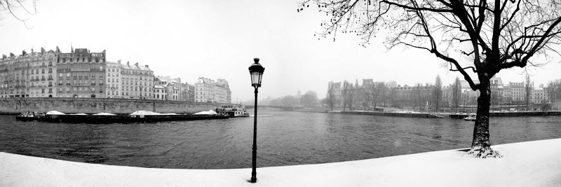
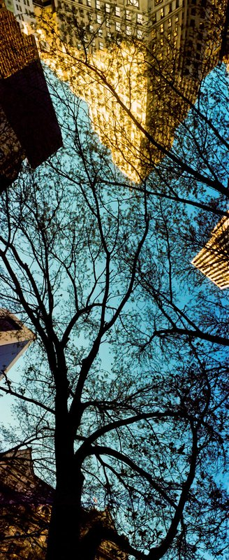
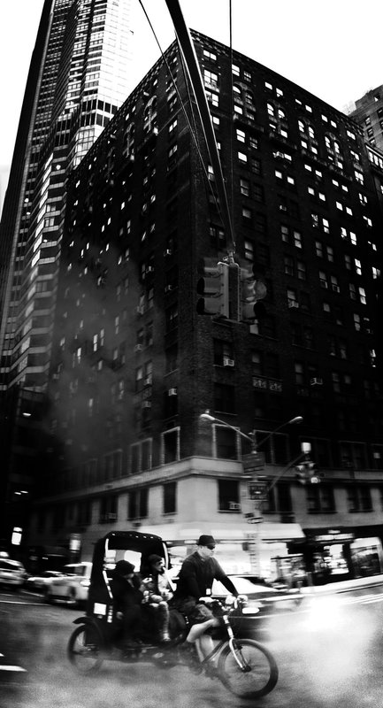

Le opere
In sala c’è solo
ciò che esiste.
Niente anteprime di cose che non ci sono. Quello che vedi qui è fatto, firmato e vive in casa nostra — senza piattaforme sotto.
Niente anteprime di cose che non ci sono. Quello che vedi qui è fatto, firmato e vive in casa nostra — senza piattaforme sotto.


